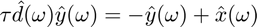
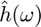

Contents
clear; close all; clc;
The IIR Filter is defined using an ODE. Solving the ODE provides a solution for the output y given an input x. The iir_filter function is defined here that solves the ODE.
tic deltaT = 1; % ms duration = 1000; % ms t = 0:deltaT:duration-deltaT; x = zeros(size(t)); x(100) = 1; tau = 25; % ms y1 = iir_filter(x, t, deltaT, tau); figure(); plot(t, y1, 'ro-'); xlabel('Time (ms)') ylabel('Output') title('IIR Filter')
a)
Impulse response
Running the iir_filter for different time-constants and plotting the output along-with an exponential function:
deltaT = 1; % ms duration = 1000; % ms t = 0:deltaT:duration-deltaT; % The impulse at time-step = 100 ms x = zeros(size(t)); x(100) = 1; taus = [25, 50, 10]; % ms figure(); for ll = 1:length(taus) tau = taus(ll); y1 = iir_filter(x, t, deltaT, tau); subplot(3, 1, ll) plot(t, y1, 'r-'); hold on; exponential = exp(-(t./tau)); % Exponential function plot(exponential, 'b'); xlabel('Time (ms)') ylabel('Output') ylim([0, max(y1)]) title(['IIR impulse response, tau = ', num2str(tau)]) end
The exponential function seems to fit the output. However, it is translated along x-direction and can be re-adjusted to account for the position of the impulse. This suggests that the solution of the ODE is of the form which is trivial.
b)
Step response
Here I am using a trivial step function where the output of the function is 0 and becomes 1 after a certain time-step. For consistency, the change is kept at 100 ms.
deltaT = 1; % ms duration = 1000; % ms t = 0:deltaT:duration-deltaT; % Step function at time-step = 100 ms x = zeros(size(t)); x(100:1000) = 1; taus = [25, 50, 10]; % ms figure(); for ll = 1:length(taus) tau = taus(ll); y1 = iir_filter(x, t, deltaT, tau); subplot(1, 3, ll) plot(t, y1, 'ro', 'DisplayName', 'step resp'); hold on; t_new = t-100; % translating time-axis to account for the position of step function start exponential = 1 - exp(-(t_new./tau)); % Fitting 1 - exp plot(exponential, 'b', 'LineWidth', 2, 'DisplayName', '1 - exp'); xlabel('Time (ms)') ylabel('Output') ylim([0, max(y1)]) legend('Location', 'southeast') end
From the graphs, we can see that the output of the IIR filter to the step response is indeed of the form
c)
Sinusoidal response
Passing a sinusoid through an IIR filter returns a sinusoid of the same frequency since this is a linear system. The amplitude and phase of the output can be computed from the fft of the ODE. The ODE for the IIR filter is:
Computing fft on both sides of the equation, we get:

Solving for gives:
Let
where  is the effective frequencye response of the linear system. Therefore,
The amplitude and phase can then be computed using the equation:
deltaT = 1; % ms duration = 1000; % ms t = 0:deltaT:duration-deltaT; freqs = [2, 10, 40]; %/1000; tau = 25; % Computing impulse and impulse-response function impulse = zeros(size(t)); impulse(1) = 1; d = iir_filter(impulse, t, deltaT, tau); % Initializing amplitude and phase arrays amp_y = zeros(length(freqs), length(t)); phase_y = zeros(length(freqs), length(t)); sub_plot_inds = 1; figure(); for ll = 1:length(freqs) f = freqs(ll)/1000; x = sin(2*pi*f*t); % Computing sinusoid input y1 = iir_filter(x, t, deltaT, tau); % Output of sinusoid input subplot(3, 1, ll) plot(t, y1, 'DisplayName', 'Output'); hold on; plot(t, x, 'DisplayName', 'Input'); xlabel('Time (ms)') ylabel('Amplitude') legend('Location', 'northeastoutside') x_fft = fft(x)'; % fft of input d_fft = fft(d); % fft of impulse-response h_fft = 1./(1 + tau .* d_fft); % effective frequency response of IIR y_fft = h_fft .* x_fft; % Output sinusoid y_fft_shift = fftshift(y_fft); amp_y(ll, :) = abs(y_fft_shift); %/tau^2; % Computed amplitude phase_y(ll, :) = angle(y_fft_shift); % Computed phase end freqHz = (0:1:length(amp_y)/2)/1000; figure(); for ll = 1:length(freqs) subplot(3, 1, ll) plot(freqHz, amp_y(ll, length(amp_y)/2:end)) % Plotting amplitude of output for different frequencies xlabel('Frequency') ylabel('Amplitude') title('Amplitude of output for sinusoid') end figure(); for ll = 1:length(freqs) subplot(3, 1, ll) plot(freqHz, phase_y(ll, length(amp_y)/2:end)) % Plotting phase of output for different frequencies xlabel('Frequency') ylabel('Phase') title('Phase of output for sinusoid') end
The output of the IIR filter for the sinusoid is also a sinusoid of the same frequency. However, the amplitude of the resulting sinusoid is scaled down. Additionally, the output sinusoid is also shifted by a certain phase.
toc
Elapsed time is 4.654707 seconds.